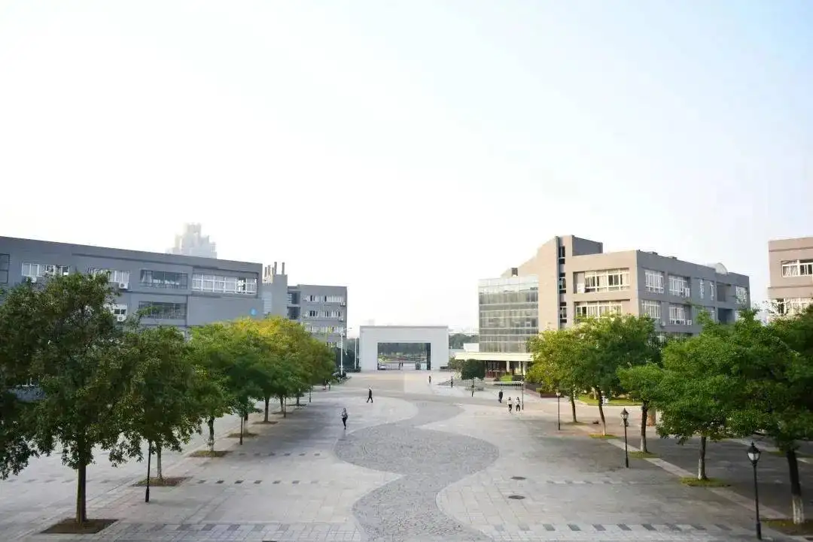

 Ningbo City College of Vocational Technology, founded in 2003, is a full-time general higher vocational college that cultivates high-quality technical and applied talents for the modern service industry.
The main campus of the school is located in Ningbo Yinzhou Higher Education Park, and the new Fenghua campus is located in Fenghua City West Cultural Education Park. The school currently has more than 550 faculty members and more than 10,000 full-time junior college students.